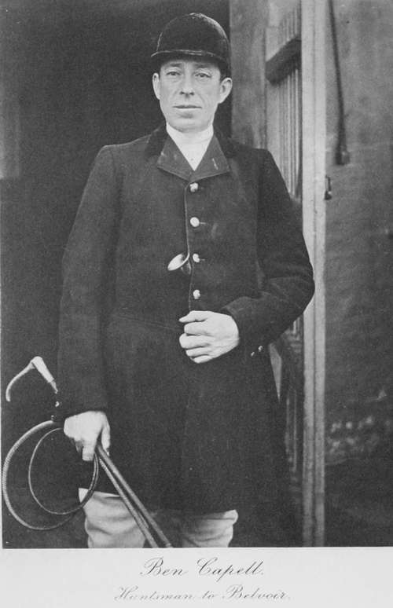

The Art Itself. Part 7
Description
This section is from the book "Hunting: A Manual of Fox, Hare, Stag & Otter Hunting", by J. Otho Paget. Also available from Amazon: Hunting: A Manual of Fox, Hare, Stag & Otter Hunting.
The Art Itself. Part 7
One of the most frequent and annoying causes for hounds checking is the intervention of a sheepdog. When it is evident that a dog has chased the fox, you should immediately make a wide cast forward and get beyond the point where the dog stopped. The sudden fright either causes the fox's scent to change or otherwise leaves him altogether, but the smell of the dog, mingling with that of the fox, is also partly responsible for the check, and the same result is seen when one hound gets ahead of the rest. It is a bad plan to encourage hounds to hunt after one of their own number, or where a dog has been coursing the fox, as it teaches the young hounds to hunt dog. Of course when one hound does get away from the others, and you do not know where he is, you are obliged to let them hunt up to him; but avoid it if you possibly can, and send a whip on to stop him. There are one or two runs on record where the object of pursuit has been a cur, and some men might think it fun if they had a gallop ; but no good sportsman or any one who cared about hounds could look upon such an event as anything except a disaster.
There are days when even the most steady hounds seem ready to run anything, and the same pack a day or two later will take no notice of the scent they had previously been anxious to hunt. I suppose there is something in the air which prevents them distinguishing the smell of the fox from that of other animals, but they will on occasions descend even to birds, and I have seen reliable hounds run both pheasants and partridges.
I think nothing of a hound running a wrong scent for a few yards, or even half a field, if he does not speak to it, for the instinct of a well-bred foxhound teaches him to get forward without loss of time, and he may be only following this line up until he can be sure he is right or wrong. You will see that in a case of this kind it behoves you to be careful how you cheer hounds on. There are some people who seem to think that when a hound puts his head down and waves his stern, he must be either on the line of a fox, or be himself a false rogue. I do not look at it in that light. When a hound is sniffing with his nose on the ground, all he means by that waving stern is that he has found a scent, and that for the moment he cannot tell you what it is, but if you will only be quiet for a minute he will let you know. Therefore, if you see a single hound feathering on some line, and yet not able to speak to it, take the rest of the pack up to him, but say nothing either in the form of encouragement or reproof. When a reliable hound throws his tongue, it will be quite soon enough for you to cheer the others on. Of course I am supposing you have no mute ones in the pack, otherwise it will be difficult to tell whether they are or are not on a fox; but when you have any of these sinners you and your whips must keep a sharp look-out, never letting a hound get far away from the main body.
I had thought of devoting a whole chapter to scent, but have come to the conclusion that as we know so little about the subject it is best left unwritten. With a gently rising glass and some moisture on the ground you can generally depend on scent being good, but there have been too many exceptions under those conditions to make it a rule. With a falling glass and half a gale blowing, we do not expect to see hounds run, but to our surprise they will sometimes run faster on these occasions than when the weather has been apparently favourable. Taking the barometer as a means of indicating the day most likely to give a good scent, I should choose it to be rather low and rising. My experience leads me to think that when the glass is very high or low, or when it is actually falling, is the time when in all probability scent will be bad. Please observe, I make no rule and lay down no law.
I am quite certain every fox has a different scent; and as each human being has his own smell, why not the fox ? You may be walking with half a dozen other men, and your dog may have loitered behind, but you will be very disgusted with him, if you leave the others, and when he comes to the spot where you parted with your friends, he cannot detect his master's smell from the others. The idea that we each have our own individual smell, however clean we may be, is repugnant to some ; but I do not see why it should be looked upon in that light, and I am quite sure no healthy man is without it. By generations of disuse we have lost the delicate perception of our smelling organs, and it is only the grosser scents now that can touch our nerves. I believe the sense of smell reflects on the brain quicker than either that of hearing, seeing, or feeling, and also leaves a stronger impression. We can all remember an instance of some peculiar scent recalling a long-forgotten scene, a time, or a face with which the smell was associated.
I have, however, nothing to do with this subject as it affects the human being, except to remind the man that he, with the combined smell of himself and horse, is likely to destroy the poor little fox's modest scent, if he gets too near the line. My object in referring to the individuality and difference in the scent of the same species, is to show that hounds should be able to distinguish the line of their hunted fox from that of another. Young hounds and those that are out of blood are careless about these shades of difference, and the stronger the scent, the better they like it. A pack that is well in blood, not by chopping foxes in covert, but after long and hard runs, is able to appreciate that its success has been gained by sticking to one scent, whether it be weak or strong. I think a fox's scent changes and grows weaker as he becomes exhausted, which is proved by the old hounds then running at the head. The young are not tired, but they do not recognise what the change in scent portends, and only notice that the delicious perfume which thrilled their nerves at first has lost some of its power. You will see by this argument that it is most important you should keep your hounds to one fox, and not allow them to change until you have either lost or killed. Of course, you might say that is every huntsman's object; but both professional and amateur generally wish to oblige the field, so that when a hunt is becoming tedious you gallop off to another covert. There is no harm in a huntsman wishing the followers of the hunt to enjoy themselves, but he must not sacrifice the welfare of his pack to that wish. He would probably like a smart gallop as much as any one ; but if he has run one fox for any length of time, he should never give him up whilst daylight lasts. I do not blame the field for wanting a gallop, and getting heartily sick of a slow dragging hunt; but I do blame the huntsman for allowing himself to be persuaded to relinquish a hunt when he has a faint chance of catching his fox.
Continue to: